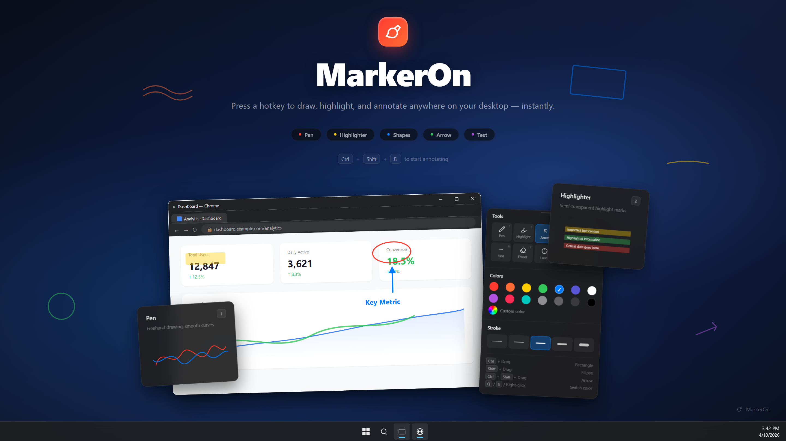
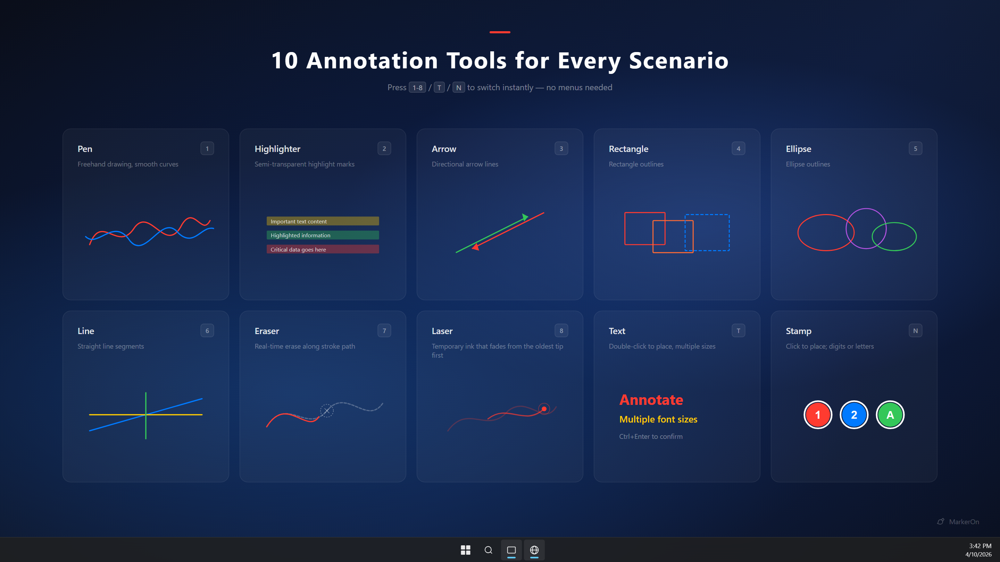
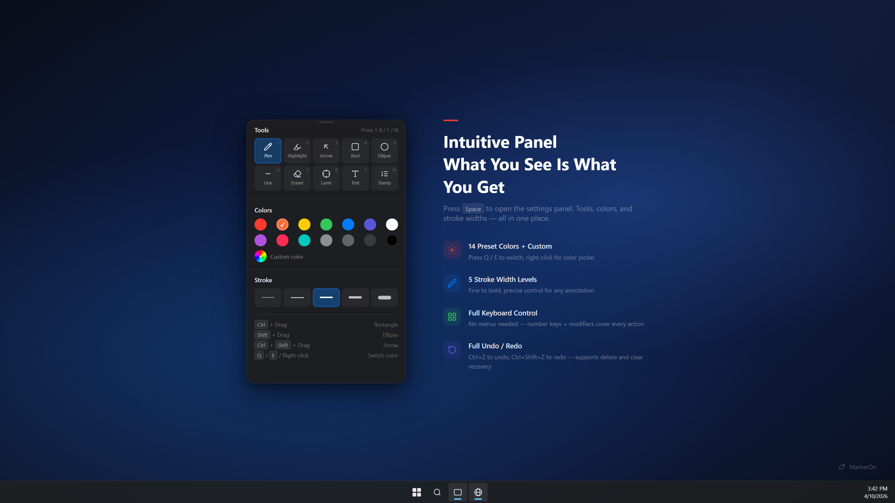

Press CtrlShiftD and start drawing over any app.

Open source / Tauri v2 / ~1.5 MB
MarkerOn
A keyboard-first screen annotation tool for demos, teaching, meetings, and recordings. Draw over any app, then switch to click-through mode while your marks stay visible.
- 8 drawing tools
- Click-through mode
- Whiteboard mode
- Win / macOS
Runs in the tray — no account, telemetry, or cloud dependency.
Shortcuts, angle snapping, custom widths, undo/redo — no menus required.
Built for live explanation
Keep the screen moving while your marks stay put.
Click-through mode
Toggle from the toolbar or with CtrlShiftX. Annotations stay visible while clicks, scrolls, and typing reach the app underneath.
Keyboard-first tools
Number keys switch tools. Ctrl+scroll adjusts width. Q/E cycle colors. Copy and clear without opening menus.
Whiteboard when needed
Press W for a clean board, keep content between sessions, and copy as an image for docs or chats.
Product surface
Annotation tools

Pen, highlighter, arrow, shapes, eraser, text, and colors.
Product surface
Settings panel

Toolbar, whiteboard, drag modes, shortcuts, and startup.
Live demo
Click-through mode

Draw, press X, then keep working underneath.
- Enter CtrlShiftD
- Toolbar Space
- Through X
- Board W
Get started
Download MarkerOn or read the FAQ.
Official installers and quick answers when comparing screen annotation tools.
Official downloads
Common questions
What is MarkerOn for?
Live screen annotation for demos, teaching, and meetings — keyboard-first tools and click-through mode built in.
How does click-through mode work?
Toggle from the toolbar, with CtrlShiftX (global), or press X while drawing. Marks stay visible while you click, scroll, and type in apps below.
Account or cloud upload?
No. Local-first, open source, and account-free.